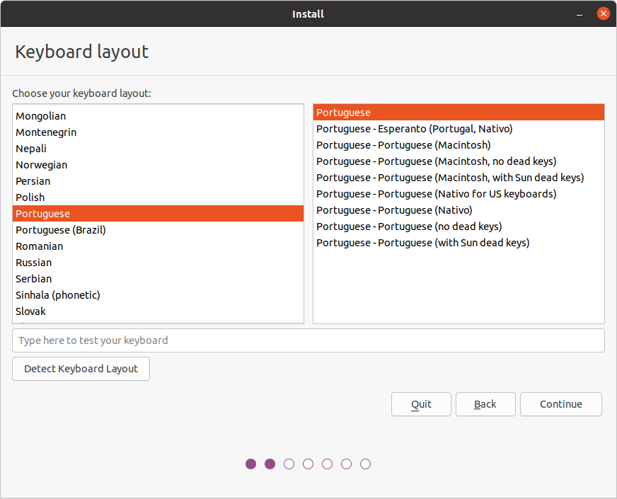
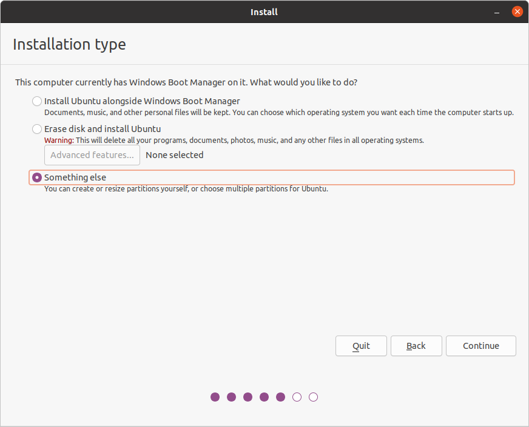
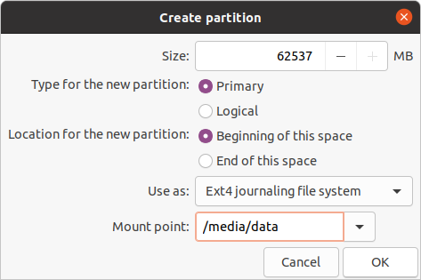
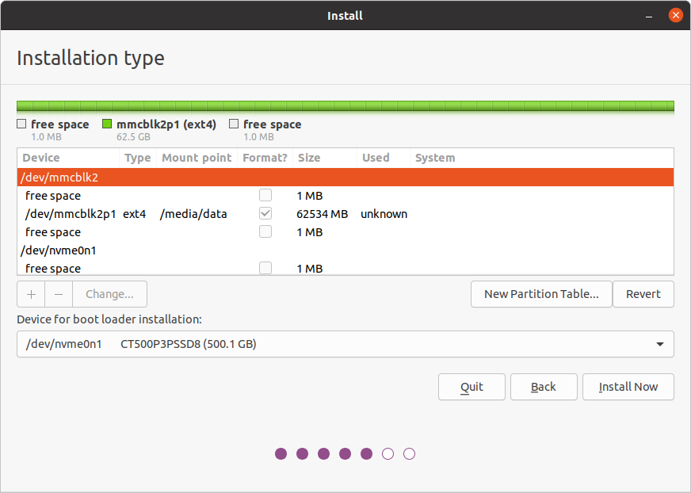

Operating System (OS)¶
Linux Distributions¶
The modifield Hangfa Discovery Q2 platform by INESC TEC uses the Robot Operating System (ROS) set of software libraries to facilitate the development of robot-oriented applications. As a result of using ROS, you should take attention to the compatibility of the Linux distributions with specific ROS versions. The following list provides a summary on the Linux compatibility with ROS:
- ROS 1
- ROS Noetic Ninjemys (EOL: May, 2025)
- Ubuntu Focal Fossa 20.04 LTS [amd64] [arm64|armhf]
- Debian Buster [amd64|arm64]
- ROS Noetic Ninjemys (EOL: May, 2025)
- ROS 2
- ROS 2 Foxy Fitzroy (EOL: June, 2023)
- ROS 2 Humble Hawksbill (EOL: May, 2027)
- ROS 2 Jazzy Jalisco (EOL: May, 2029)
Still, the remaining of the Operating System tutorial will focus on Ubuntu Focal Fossa 20.04 LTS due to its compatibility with both ROS 1 and ROS 2 versions.
Create Bootable USB¶
Rufus (Windows)¶
- Download and install Rufus
- Download the Ubuntu Focal Fossa 20.04 LTS image file
- Select your USB stick for the Device option
- Select the Ubuntu image file for the Boot selection option
- (optional) Disable quick format and/or Enable check device for bad blocks
- Press the Start button
Linux¶
- Open the Make Startup Disk application
- Select the Ubuntu image file for the CD-Drive/Image option
- Select your USB stick for the Device option
- Make Startup Disk
Installation¶
- Power on or reboot the Single Board Computer (SBC)
- Press Del or Esc key continuously (for LattePanda SBCs) to enter into BIOS menu
- BIOS Setup Boot Select the USB drive as the first boot option
- Save the changes and exit the boot screen
- Select Install Ubuntu
- Language

- Keyboard layout 
- Select Minimal installation, and enable
Download updates while installing Ubuntu and
Install third-party software for graphics and Wi-Fi hardware

-
Select Something else to create and resize partitions yourselft 
- Remove all pre-existing partitions

-
SSD (
/dev/nvme0n1)-
512MB EFI System Partition

-
8192MB swap area

-
/root (remaining of the disk free available size)
-
-
eMMC (
/dev/mmcblk2)-
/media/datapartition
Tip
SSD is set as the boot loader and to have the OS's root partition due to being faster that eMMC memory. As a result, the latter can be used as additional data storage, following the preivous steps.
-
-
Final partition scheme


-
Confirm disk changes

- Remove all pre-existing partitions
-
Timezone

-
User and computer information settings

Warning
If you have more than 1 robot, it is advisable for you to use different computer's name for network discoverability purposes and alias definitions.
Tip
Use user as the username for all your robots to facilite when connecting remotely to the robot (e.g.,
ssh user@<robot_name>, assuming that<robot_name>is defined as a valid network alias). -
Press Continue to finish the installation of the OS
- Reboot the Single Board Computer (SBC)
Setup¶
Keyboard Shortcuts¶
- Open Settings
- Task Bar Settings
- Dock Show Applications Settings
- Privacy Screen Lock
- Set Blank Screen Delay to Never
- Disable Automatic Screen Lock
- Power
- Set Power Saving: Blank Screen to Never
- Keyboard Shortcuts
- Home folder: Super+E
File Explorer¶
- Open File Explorer (Super+E)
- Open the Menu Preferences
- Views Enable List View: Allow folders to be expanded
Getting Started¶
sudo apt update
sudo apt dist-upgrade
sudo apt install build-essential git net-tools nmap terminator vim xclip